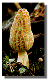

1997-12-02
Mushroom Hunting
I got interested in mushroom hunting through the writings of John Cage. In several of his books he has little stories bout hunting mushrooms, and it sounded interesting.
I joined the  Boston Mycological Club
in 1975 and met some wonderful people.
The Club sponsored mushroom walks on most Sunday mornings in the spring and summer;
we would collect some of each species, identify them with the help of experts, and picnic.
Boston Mycological Club
in 1975 and met some wonderful people.
The Club sponsored mushroom walks on most Sunday mornings in the spring and summer;
we would collect some of each species, identify them with the help of experts, and picnic.

Amanita muscaria. Most species of Amanita are poisonous: some are "deadly," meaning "kill you for sure," but muscaria's poison is a powerful neurotoxin.
Don't eat wild mushrooms unless they've been identified by an expert! The real mushrooms don't always look like the ones in the book; unusual examples of one species may look a lot like some other less desirable species; and the same species may vary in appearance and toxicity from place to place.

Amanita caesarea. This mushroom is edible and highly prized. John Tankard found this beauty in 1977, I think, on a BMC walk in New Hampshire, at the Strattons'.
This mushroom is rare in New England, much more common in Europe. Every year in California, a few recent immigrants eat one of the deadly Amanitas and end up needing liver transplants; my guess is that there's some southeast Asian mushroom they're used to, that looks just like the California deadly version.

Polyporus sulfureus. This mushroom is edible and good. Pat Peterson found this one in 1976 on a BMC walk on Martha's Vineyard. We cooked it up and ate it with chicken. Some people report unpleasant side effects if you eat this mushroom and drink alcohol, flushing and discomfort; didn't notice anything like that.
Actually I think the nomenclature has changed since we found the mushroom, and now it's assigned to another genus. This is one of the things that really fascinated me about mushrooms: they can get reclassified by biologists as more information is discovered. Mushrooms thought to be closely related, based on their appearance and habitat, may be reclassified as belonging to widely separated groups, on the basis of DNA evidence. Species divisions are not immutable facts, but expert judgments based on what's known at the time.

This is a morel that popped up in our back yard when we lived in California. Nobody can explain this. Morels don't usually grow in Sunnyvale; they're found in the woods of Michigan, near my mom's, every spring. They are highly prized and wonderful for cooking. People have their secret places where they find morels.
We picked a whole bowl of morels. We sauteed some in a little butter and I ate them; Lilli waited till the next day to see if I got sick. I was fine, so we ate them for several days in various dishes. It was a rare treat. They didn't come back the next year.
Mushroom Web Sites
 North American Mycological Association
North American Mycological Association
 Tom Volk's Fungi
Tom Volk's Fungi
 Mike Woods' Myko Web
Mike Woods' Myko Web
Updated 12/02/97